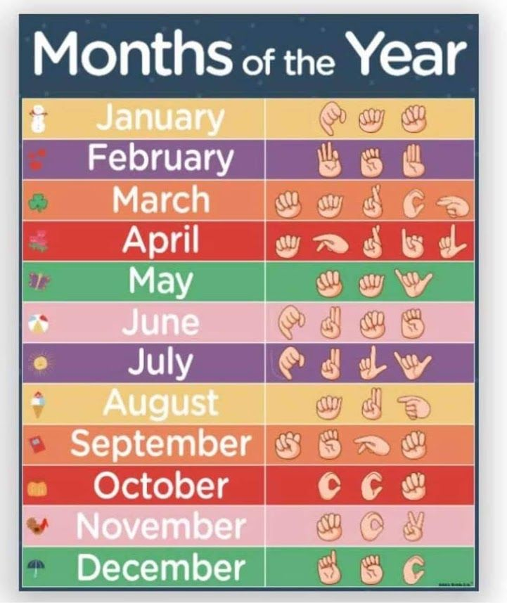

Before learning how to sign different months of the year in American Sign Language (ASL), it’s important that you learn the American Sign Language alphabet first. The ASL signs for the months of the year are normally fingerspelled in abbreviation or in full (e.g. JAN for January or MARCH). Some people may fingerspell the months out fast or at normal speed. Hence, building your fingerspelling receptive skill is another thing that you have to practice while learning ASL.
📅 January With your dominant hand, hold your hand up and have your palm facing forward and fingerspell J-A-N. 📅 February With your dominant hand, hold your hand up and have your palm facing forward and fingerspell F-E-B. 📅 March With your dominant hand, hold your hand up and have your palm facing forward and fingerspell M-A-R-C-H. 📅 April With your dominant hand, hold your hand up and have your palm facing forward and fingerspell A-P-R-I-L. 📅 May With your dominant hand, hold your hand up and have your palm facing forward and fingerspell M-A-Y. 📅 June With your dominant hand, hold your hand up and have your palm facing forward and fingerspell J-U-N-E. 📅 July With your dominant hand, hold your hand up and have your palm facing forward and fingerspell J-U-L-Y. 📅 August With your dominant hand, hold your hand up and have your palm facing forward and fingerspell A-U-G. 📅 September With your dominant hand, hold your hand up and have your palm facing forward and fingerspell S-E-P-T. 📅 October With your dominant hand, hold your hand up and have your palm facing forward and fingerspell O-C-T. 📅 November With your dominant hand, hold your hand up and have your palm facing forward and fingerspell N-O-V. 📅 December With your dominant hand, hold your hand up and have your palm facing forward and fingerspell D-E-C.
